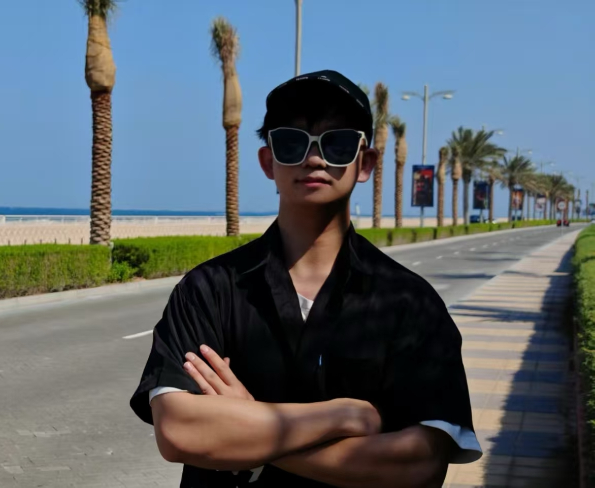

|
Lixing Xiao (肖力行) I am an incoming Master student at 3D Vision Group, Zhejiang University, supervised by Sida Peng and Xiaowei Zhou. Prior to joining ZJU, I earned my Bachelor of Engineering degree in Artificial Intelligence from Southeast University (SEU), where I cultivated a strong foundation in computational methods and intelligent systems. I'm interested in Computer Vision, Deep Learning and Generative AI. |
 |
{kind=link}
Newsüéâ [2025-06] Two papers accepted to ICCV 2025. Let's have fun in Hawaii! üèñÔ∏è |
Publications |
Preprints |
|
|
Unifying Appearance Codes and Bilateral Grids for Driving Scene Gaussian Splatting
Nan Wang, Yuantao Chen, Lixing Xiao, Weiqing Xiao, Bohan Li, Zhaoxi Chen, Chongjie Ye, Shaocong Xu, Saining Zhang, Ziyang Yan, Pierre Merriaux, Lei Lei, Tianfan Xue, Hao Zhao† arXiv 2025 [Paper] [Project Page] [Code] |
Open Source Project |
|
|
272-dim Motion Representation

This motion representation enables directly conversion from joint rotations to SMPL body parameters, removing the need of error-prone Inverse Kinematics (IK) operation. Github, 2025 |
Awards |
|
üèÜ
|
[2023-2024] National Scholarship |